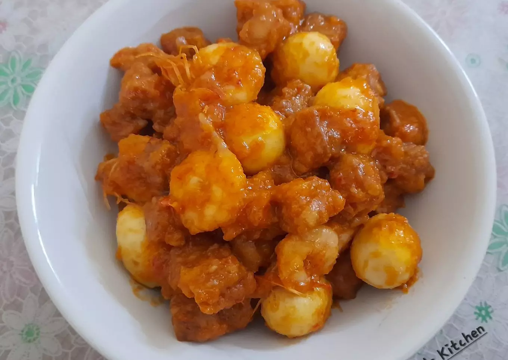

Resep Sambel Goreng

Deskripsi
Menu masakan kali ini full protein nabati dan hewani.
Ada tempe, telur puyuh, dan udang. Pasti semua orang juga bisa masak resep sambal goreng.
Buat aku, sambal goreng adalah makanan yang simple tapi memiliki cita rasa yang lezat.
Gurih dan pedas adalah perpaduan yang mantap.
Ini sambal goreng versi aku. Kalau kamu?
Bahan-Bahan
- 1 bungkus tempe
- 10 butir telur
- 200 gram udang
- 5 siung bawang merah
- 3 siung bawang putih
- 5 buah cabai merah
- 5 buah cabai rawit
- gula, garam, penyedap rasa
- minyak goreng
Cara membuat
- Siapkan dan cuci bersih semua bahan. Kupas udang, potong-potong tempe, dan rebus telur puyuh.
-
Selanjutnya, goreng tempe, udang dan telur puyuh yang sudah direbus.
-
Haluskan sumua bumbu. Kemudian tumis hingga wangi dan matang.
-
Jika bumbu halus sudah wangi, tambahkan air. Masukkan garam, gula, dan penyedap rasa. Aduk-aduk hingga merata.
-
Setelah air agak mendidih, masukkan tempe, telur puyuh, dan udang yang sudah digoreng. Aduk rata dan jangan lupa dicicipi. Masak hingga matang.
-
Jika rasa sudah pas dan semua bahan tercampur rata, matikan api kompor dan sajikan. Sambal goreng udang, tempe dan telur puyuh siap dinikmati.